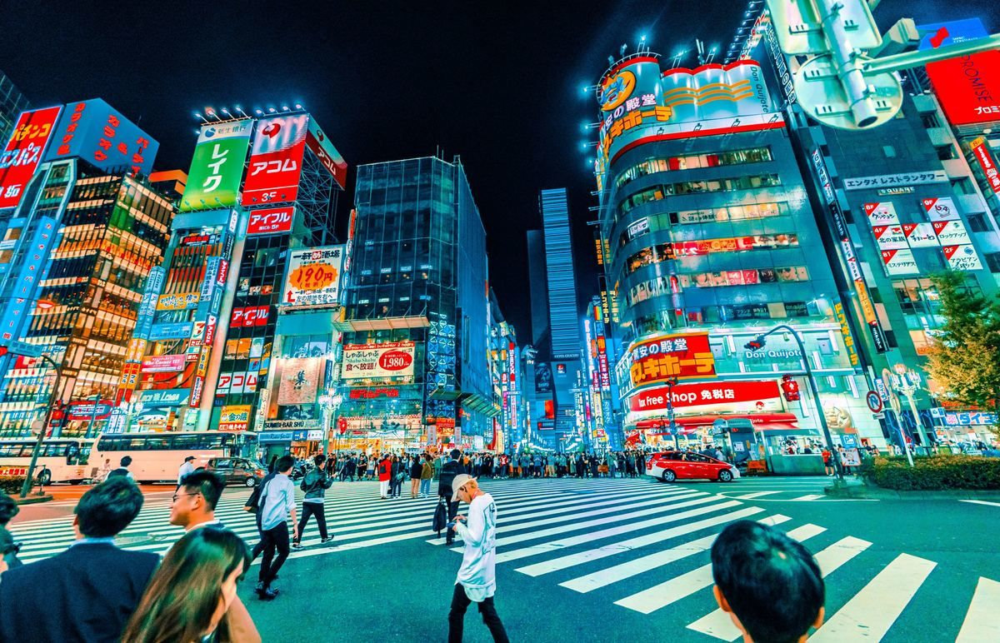
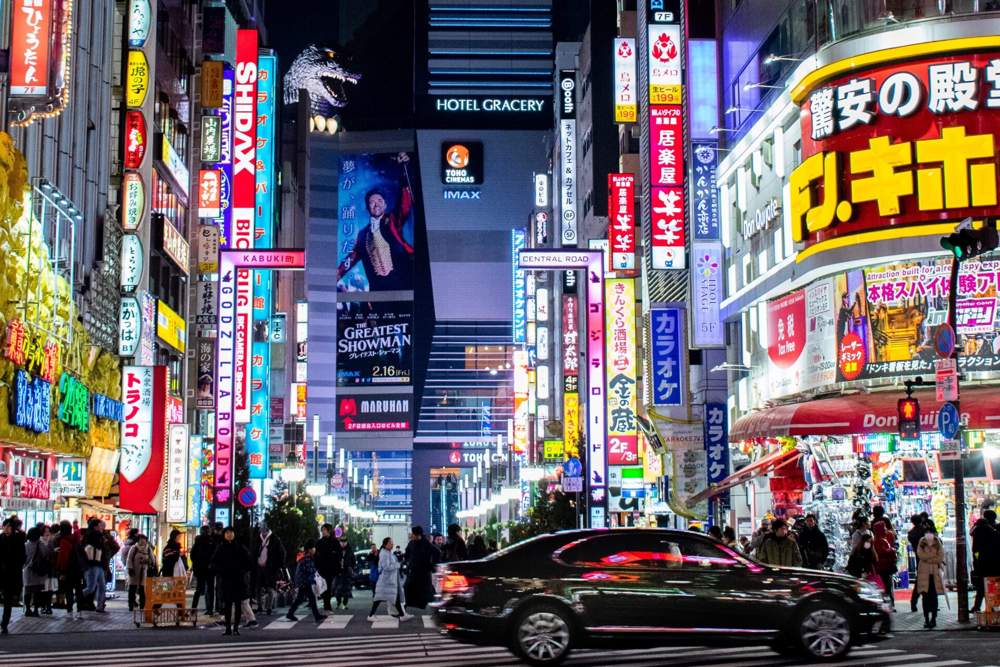

Information
Tokyo is a global metropolis known for its scale, safety, efficiency and the way traditional customs coexist with contemporary life.
Quick facts
| Name | Tokyo |
| Country | Japan |
| Official language | Japanese |
| Currency | Japanese yen (¥) |
| Metropolitan population | About 37 million people |

Did you know?
Despite being one of the world's largest urban areas, Tokyo is famous for its well-organised public transport. The city is also home to Toyosu Market, districts dedicated to pop culture and peaceful parks such as Ueno and Shinjuku Gyoen.

To plan a visit, consult the official Tokyo tourism guide.